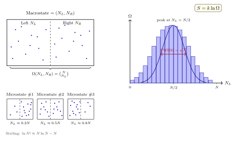

第二定律到底是怎么"自然"出现的?
一杯热咖啡放在桌上, 半小时后会凉到室温; 反过来, 一杯温水放在桌上不会自动把桌面的热量收进去, 再烫起来. 一滴墨水滴进清水, 会扩散成均匀的浅灰; 反过来, 一盆浅灰的墨水不会自动把染色分子收拢回一滴. 这类"有去无回"的单向性就是第二定律的现象学内容. Clausius 1865 年把它整理成那句著名口号: 宇宙的熵趋于极大.
但如果你肯较真, 就会立刻不安起来. 支配咖啡杯里每一个水分子的是 Newton 力学或 Schrödinger 方程, 这两套方程都对时间反演严格对称 —— 把时间倒过来播放, 得到的还是合法解. 既然微观方程不区分过去和未来, 那"有去无回"的时间之箭, 到底从哪里冒出来的? 更尖锐地问, 热力学就凭一句"熵永不减少", 凭什么? 如果哪天真的有一天, 房间里所有空气分子自发地挤到左半边, 剩下半边成了真空 —— 这不违反 Newton 力学一毫米, 为什么我们觉得它不可能?
这一节就要回答这个"凭什么". 我们会看到, 第二定律不是一条独立的公理, 而是一条关于计数的大数定律: 宏观演化沿着微观态计数 $\Omega$ 增大的方向发生, 不是因为有某种力禁止它回头, 而是因为"回头"对应的微观态数目相对少得可以忽略. Boltzmann 1877 年把这件事浓缩成 $S = k\ln\Omega$ —— 这条后来刻上他墓碑的公式, 是本节的主角.
一、微观态、宏观态与等概率假设
先把术语定死. 考虑一个孤立系统, 总能量 $E$ 固定, 体积 $V$ 固定, 粒子数 $N$ 固定. 系统的"微观态"指相空间里一个确定的点 (经典) 或 Hilbert 空间里一个确定的基矢 (量子), 即所有粒子的位置与动量 (或所有量子数) 都被指明. 系统的"宏观态"则只指出那些我们在实验室里测得到的粗粒化变量: 气体左半边有多少粒子、能量在某个子系统占多少份额、磁化强度是多少, 等等.
一个宏观态通常对应大量微观态. 例子: 把 $N$ 个可区分的粒子扔进一个分成左右两半的盒子, "左边 $N_L$ 个, 右边 $N_R = N - N_L$ 个"是一个宏观态, 对应的微观态数 (多重性) 就是一个二项系数
$$ \Omega(N_L) = \binom{N}{N_L} = \frac{N!}{N_L!\,(N-N_L)!}. \tag{1} $$
统计力学的基本公设 —— 等概率假设 (principle of equal a priori probabilities) —— 说的是: 对一个处于平衡的孤立系, 在能量壳 $[E, E+dE]$ 上每一个允许的微观态出现的概率都相同. 这不是从哪条更深的原理推出来的, 它就是进入统计力学的"门票". 由此立刻得出一条结论: 任何宏观变量取值 $X$ 的概率, 正比于它对应的微观态数 $\Omega(X)$. 系统在 $\Omega$ 最大的那个宏观态附近逗留的时间压倒性地多, 那个宏观态就被我们叫做"平衡态".
注意我们什么都还没证. 只是把"系统倾向走向熵最大的宏观态"翻译成了"系统倾向走向 $\Omega$ 最大的宏观态". 要真的把它和 Clausius 的 $\delta Q/T$ 画等号, 还得做一些工作 —— 这就是下一节的 deepdive.

二、严格接起来: $S = k\ln\Omega$ 凭什么就是那个熵?
这是一个被引用得最多、但最少被认真讲清楚的公式. 大多数教材的处理是: "定义" $S \equiv k\ln\Omega$, 然后宣称它"就是"热力学熵. 这种做法回避了最要害的问题: Clausius 的熵是一个实验室量 ($dS = \delta Q_\text{rev}/T$, 可以拿量热器测), Boltzmann 的熵是一个计数量 (数微观态的对数, 没法直接测). 凭什么它们是同一个东西? 下面我们把这件事严格推一遍.
把一个孤立总系统分成两个子系统 $A$ 和 $B$, 能量分别为 $E_A, E_B$, 总能量 $E = E_A + E_B$ 固定. 子系统间只允许交换能量 (热接触), 不交换粒子、不做功. 单个子系统的微观态数分别为 $\Omega_A(E_A),\ \Omega_B(E_B)$. 由于两子系统独立, 总微观态数是乘积:
$$ \Omega_\text{tot}(E_A) = \Omega_A(E_A)\,\Omega_B(E - E_A). $$
平衡状态对应 $\Omega_\text{tot}$ 取极大. 对 $E_A$ 求一阶条件:
$$ \frac{\partial \ln \Omega_A}{\partial E_A} = \frac{\partial \ln \Omega_B}{\partial E_B}. \tag{2} $$
这是一条纯计数导出的结论: 两个热接触的子系统平衡时, 某个只由计数决定的量 $\partial \ln\Omega/\partial E$ 两边相等. 现在问: 实验室里什么量在两个热接触子系统平衡时两边相等? 答案当然是温度. 于是我们被迫承认, $\partial \ln\Omega/\partial E$ 和某个温度函数之间必有一一对应. 把这个对应写出来, 定义统计温度
$$ \frac{1}{T_\text{stat}} \equiv k\,\frac{\partial \ln \Omega}{\partial E}. $$
注意这里插入的 $k$ 是一个为了让单位和 Kelvin 温度兼容的比例常数, 它的量级由一次对理想气体的实验校准 (比如 $PV = N k T$) 定死, 就是 Boltzmann 常数 $k \approx 1.381\times 10^{-23}\,\text{J/K}$. 这件事做完一次, 以后就固定了.
下一步是把 $k\ln\Omega$ 和 Clausius 的积分 $\int dQ/T$ 对比. 考虑一个无穷小的准静态过程, 系统体积固定, 只吸热 $\delta Q$. 内能改变 $dE = \delta Q$. 于是
$$ d(k\ln\Omega) = k\,\frac{\partial \ln\Omega}{\partial E}\,dE = \frac{1}{T}\,\delta Q. $$
这正是 Clausius 写下的 $dS = \delta Q/T$ —— 只要把左边那个由计数定义的 $k\ln\Omega$ 称作"熵". 也就是说, 在等容准静态情形下, Boltzmann 熵的微分和 Clausius 熵的微分严格相等. 把体积也放开, 加入 $P\,dV$ 项, 同样的论证给出 $d(k\ln\Omega) = (\delta Q + P\,dV - P\,dV)/T = \delta Q_\text{rev}/T$, 依然重合 (细节就是对 $\Omega(E, V)$ 的偏导写完整). 两个熵相差最多一个与过程无关的常数, 而 Nernst 第三定律把这常数也定死为零 (另一节再讲).
为让这段论证落到地面, 我们换一个可解模型当小试金石: 两个能级、$N$ 个独立自旋的 Schottky 系统. 把自旋置于磁场 $B$ 中, 单自旋能级为 $\pm \mu B$, 记 $n$ 为处于高能态的自旋数. 总能量 $E = (2n - N)\mu B$, 多重性 $\Omega = \binom{N}{n}$. 一方面, 按 Boltzmann
$$ S_\text{B} = k \ln\binom{N}{n}, $$
用 Stirling $\ln N! \approx N\ln N - N$ 化简得 $S_\text{B}/k \approx -N[p\ln p + (1-p)\ln(1-p)]$, 其中 $p = n/N$ 是高能态占比. 另一方面, 由 $\partial \ln\Omega/\partial E$ 算 $1/T$, 解出 $p = 1/(1 + e^{2\mu B/kT})$ (就是 Fermi 形分布), 然后直接算 $\int \delta Q_\text{rev}/T$ 沿等磁场等粒子数加热路径的积分, 得到 $S_\text{C} = \int C(T)/T\,dT$, 积出来的函数和上面那个 $-Nk[p\ln p + (1-p)\ln(1-p)]$ 吻合到最后一个系数. 这不是"定义", 这是两条独立计算殊途同归的验算. 一旦某个具体可解模型能这么对上, 对别的模型只需依靠(2)式的普遍导出.
结论: $S = k\ln\Omega$ 不是定义, 而是一条定理 —— 它把实验室里的 Clausius 熵 (一个关于热量的量) 严格等价于计数空间里的 Boltzmann 熵 (一个关于微观态数目的量). 一旦接受这件事, 第二定律就从"熵永不减少"变成了"系统去它微观态数最多的地方", 而后者完全是概率的内容, 不是任何神秘的禁令.
三、理想气体的 Ω 与 Sackur–Tetrode
把 $S = k\ln\Omega$ 用到一个具体对象上, 就能看到它的力道. 考虑 $N$ 个无相互作用、不可区分的经典单原子气体分子, 总能量 $E$, 装在体积 $V$ 中. 相空间体积 (能量 $\le E$ 的部分) 为 $N$ 个粒子的位置选 $V^N$, 动量落在能量壳 $\sum p_i^2 \le 2mE$ 里, 即 $3N$ 维球 $V_{3N}(R)$, $R = \sqrt{2mE}$. 其体积为 $\pi^{3N/2}\,R^{3N}/\Gamma(3N/2 + 1)$.
按半经典的相空间量子化规则, 把相空间划成体积 $h^{3N}$ 的小格子 (每格一个量子态); 同类粒子不可区分性要求再除 $N!$. 于是
$$ \Omega(E, V, N) \propto \frac{1}{N!\,h^{3N}}\,V^N\,\frac{(2\pi m E)^{3N/2}}{\Gamma(3N/2 + 1)}. $$
取对数, 用 Stirling $\ln N! \approx N\ln N - N$ 和 $\ln\Gamma(3N/2+1) \approx (3N/2)\ln(3N/2) - 3N/2$, 整理:
$$ S/k = N\!\left[\ln\!\left(\frac{V}{N}\left(\frac{4\pi m E}{3 N h^2}\right)^{3/2}\right) + \frac{5}{2}\right]. $$
这就是 Sackur–Tetrode 公式 (1912–1913). 它给出的气体熵与实验测得的低温气体比热积分的绝对熵 (Nernst 零点) 结果在精度极限内一致, 是量子力学登场前就已经把 Planck 常数 $h$ 压进经典气体熵里的一段经典前奏.
代入数字. 室温 $T = 300\,\text{K}$, 氦气在一大气压下一摩尔 (约 $22.4\,\text{L}$, $N = 6.02\times 10^{23}$), 氦原子质量 $m = 6.64\times 10^{-27}\,\text{kg}$. 计算内能 $E = (3/2)NkT$, 代回上式, 算出 $S \approx 126\,\text{J/(mol·K)}$. 实验值 (摘自标准化学手册) 约 $126.15\,\text{J/(mol·K)}$. 一个从微观计数出发、完全不碰实验热容的公式, 一次性把数字报对到 0.1% —— 这是 Boltzmann 计数路线最漂亮的一张报价单. 如果没有 Stirling 近似和因子 $1/(N!)$ 的同种粒子不可区分性, 得到的结果会多出一项 "混合熵" 悖论 (Gibbs 悖论), 连量级都错 —— 这是统计力学早期最著名的一次自检.
四、第二定律 = 极大概率定律: 涨落概率与 $N\sim 10^{23}$
现在回到最初的那个挑衅性问题: 为什么房间里空气不会自己挤到左半边? 在上面的框架里, 答案是一个概率估算.
考虑 $N$ 个气体分子在一个分成左右两半的盒子里. 所有分子都在左半边对应的微观态数是 $1$ (或者更精确地, $V^N$ 乘了因子 $(1/2)^N$, 但对数后变成同一件事), 而均匀分布 (左右各半) 对应的微观态数按 (1) 式取 $N_L = N/2$, 其峰值
$$ \Omega_{\max} = \binom{N}{N/2} \approx 2^N / \sqrt{\pi N/2}\,. $$
所以"全部挤到左半边"相对于均匀分布的概率比, 为 $\Omega_\text{all left}/\Omega_\max \sim 2^{-N} \cdot\sqrt{\pi N/2}$. 对 $N = 10^{23}$ 的普通气体, 这是 $10^{-N\log_{10}2} = 10^{-3\times 10^{22}}$ 量级. 如果你再问"一半的粒子突发地跳到左半边" (也就是 $N_L \geq 3N/4$ 这类大偏离) 的概率, 由 Gauss 近似
$$ P(N_L) \propto \exp\!\left(-\frac{(N_L - N/2)^2}{N/2}\right), $$
代入 $N_L - N/2 = N/4$, $N = 10^{23}$, 指数为 $-(N/4)^2/(N/2) = -N/8 = -1.25\times 10^{22}$, 概率约 $\exp(-1.25\times 10^{22}) \approx 10^{-5.4\times 10^{21}}$, 和上面那个 $10^{-10^{22}}$ 是一个量级 —— 小到宇宙从大爆炸以来的每一飞秒都反复等待都还碰不到一次. 第二定律在 $N\sim 10^{23}$ 时是 effectively deterministic, 但它本质上是概率的.
这里必须做一次极限检验. 把 $N$ 推到很小, 比方说 $N = 10$. 同样的公式给出 $P(N_L = 10) = 1/2^{10} \approx 10^{-3}$ —— 这可不算小, 一千次观测里就发生一次. 实际上, 拿 10 个磁场中的自旋粒子做实验, 涨落肉眼可见, 宏观上"熵时刻增大"这条铁律在那里就是一条建议而不是禁令. 再把 $N$ 推到 $N = 2$, 涨落就是整个系统的全部, 熵一会儿上一会儿下, 根本没有平衡态可言. 这个小 $N$ 极限告诉我们: 第二定律不是力学定律, 它是极限定理; 它在 $N$ 大时严苛得近乎绝对, 在 $N$ 小时几乎消失. 这件事和大数定律在 $N$ 大时把方差压到 $1/\sqrt N$、在 $N$ 小时根本没有统计意义, 是同一件事的两个陈述.
Boltzmann 本人为这个图像付出了昂贵的代价. 他 1872 年推出"H 定理", 用一个关于单粒子分布 $f(\mathbf v, t)$ 的假设 (分子混沌假设 Stosszahlansatz) 证明 $H = \int f\ln f\,d^3v$ 单调不增, 似乎给了第二定律一个机械证明. Loschmidt 1876 年提出著名的"时间反演反驳": 把分子速度瞬间全部反转, 系统会倒着演化回到熵更低的状态 —— Newton 方程允许, 你的 H 定理也就不许单调. Zermelo 1896 年又用 Poincaré 回归定理加了一击: 任何有限相空间里的保守系, 最终都会任意接近初态一次, 意味着 $H$ 不可能严格单调. Boltzmann 的回应就是本节的核心: H 定理给出的是极大概率行为, 不是确定性定律; 涨落存在, 但在 $N\sim 10^{23}$ 时涨落概率小到 $\exp(-10^{22})$ 的量级, 实际等不到. Poincaré 回归时间则是 $\exp(N)$ 量级, 远远超过宇宙年龄. 1877 年他把这个图像总结为 $S = k\ln W$ (他用 $W$ 表示 "Wahrscheinlichkeit", 德语的概率), 后来刻在了他维也纳中央公墓的墓碑上. 1906 年, 他因抑郁结束了自己的生命. 短短几年后, 原子论从被怀疑到被 Perrin 的布朗运动实验确认 —— 他没等到.
小结
第二定律从来不是一条关于"热"的独立公理, 它是一条关于"计数"的大数定律. Clausius 的 $dS = \delta Q/T$ 和 Boltzmann 的 $S = k\ln\Omega$ 不是两件事, 而是通过 $1/T = k\,\partial \ln\Omega/\partial E$ 严格等价的同一件事; 前者是实验室侧的记账凭证, 后者是微观相空间里的体积计数. 一旦认清这一点, "熵永不减少"就不再神秘: 孤立系自发地滑向 $\Omega$ 最大的宏观态, 不是因为有神秘禁令, 而是因为 $\Omega$ 在别处小到 $\exp(-N)$ 级. 把 $N$ 压到 $10$ 甚至 $2$, 禁令立刻瓦解成涨落; 把 $N$ 推到 $10^{23}$, 禁令成铁律. 这个图像会在下一节讨论 Legendre 变换和自由能时再露一次面 —— 那里我们要问另一个 cliché: 内能、焓、自由能凭什么是它们?
▲